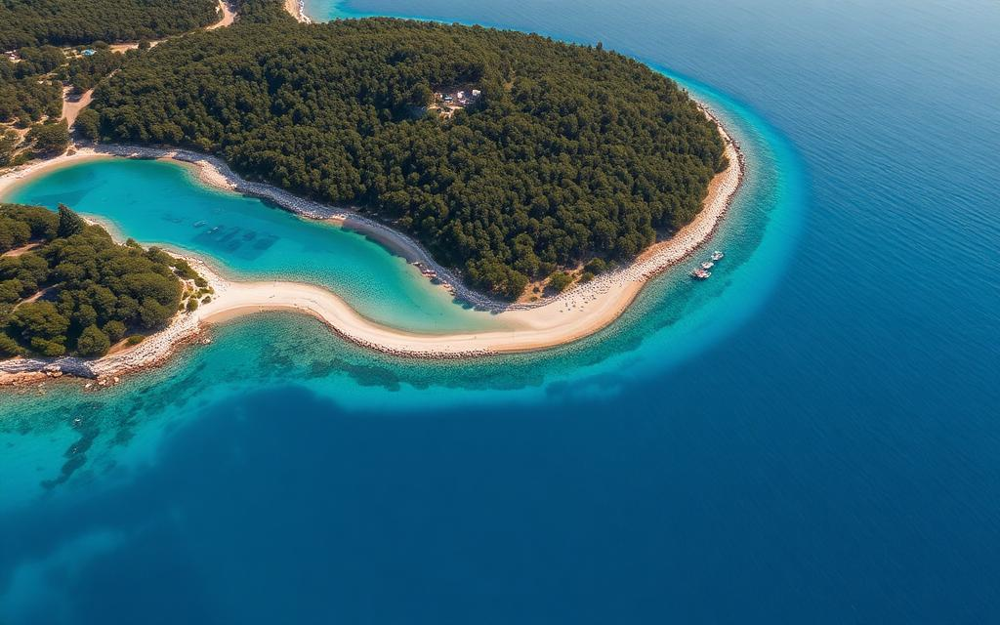
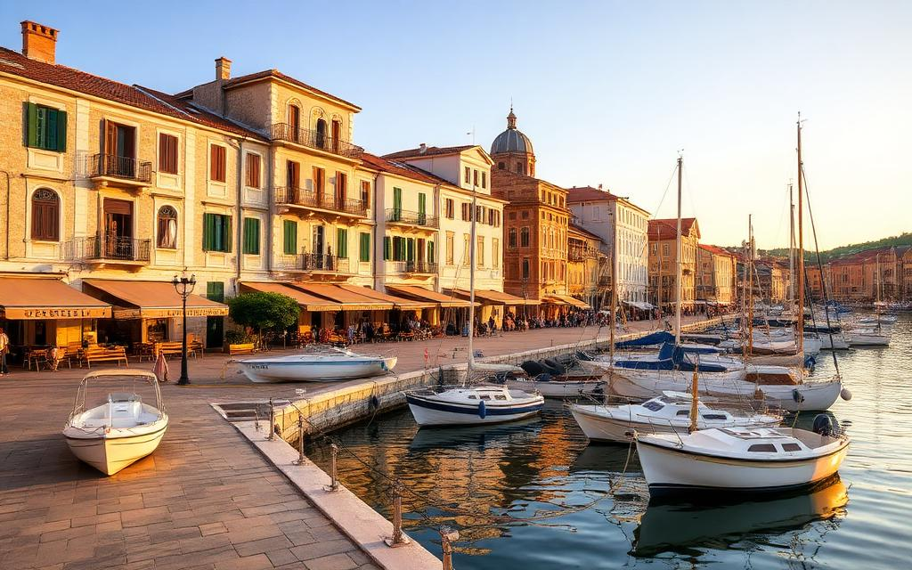
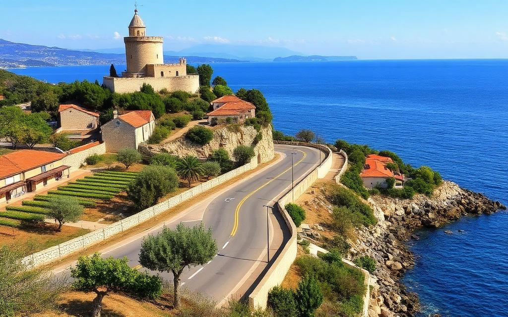
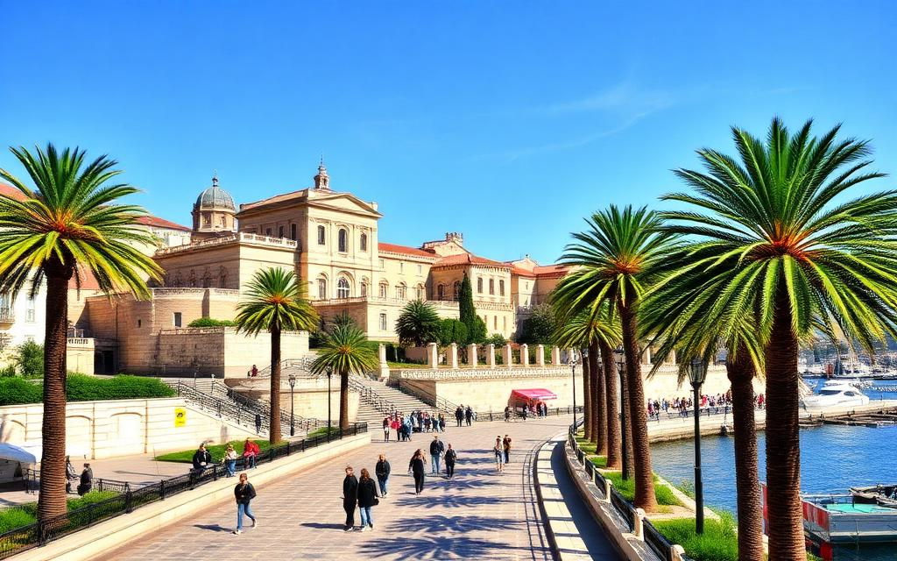
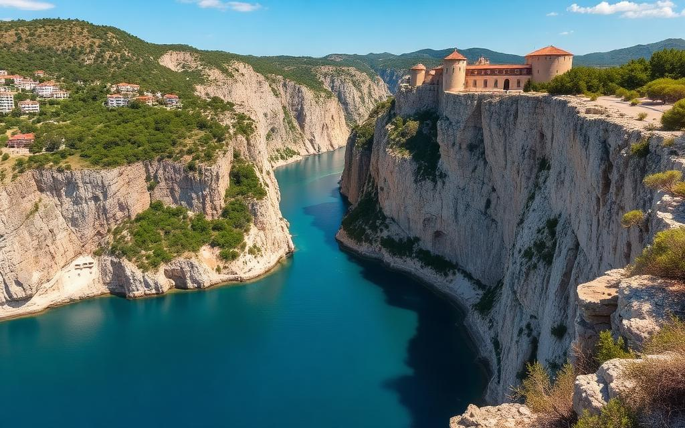
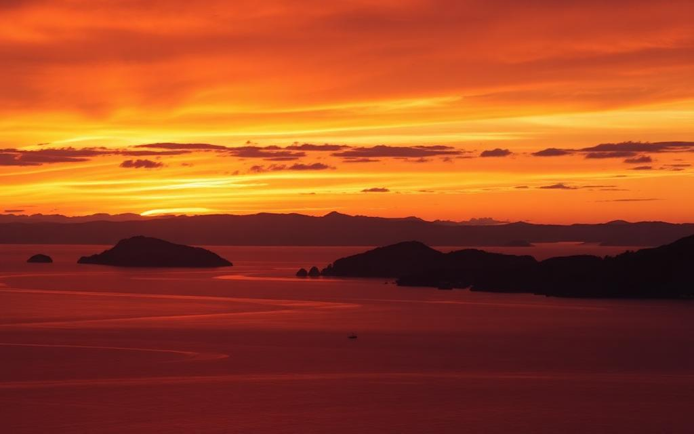

Easy
50cc
Čiovo Beach Hopping — The Perfect Half-Day Tour
Discover hidden beaches on Čiovo island, from Okrug Gornji to secluded coves only locals know about.
View Full Tour
Insider tour ideas from the ScooterTrogir team. Routes with maps, stops, and tips for every rider level.

Discover hidden beaches on Čiovo island, from Okrug Gornji to secluded coves only locals know about.

A gentle loop through Trogir's UNESCO old town and the scenic Seget Donji promenade. Perfect for first-timers.

Ride through the seven medieval castles of Kaštela, stop at a local winery, and enjoy stunning bay views.

Ride to Croatia's second city, explore the ancient palace, walk the Riva promenade, and swim at Bačvice beach.

The ultimate Dalmatian ride. Cruise to Omiš, explore the dramatic Cetina river canyon, and visit a medieval fortress.

A short evening ride along the coast to catch the best sunset views over the Adriatic. Magical and unforgettable.
We know every road, beach, and hidden gem around Trogir. Call us for free route advice!